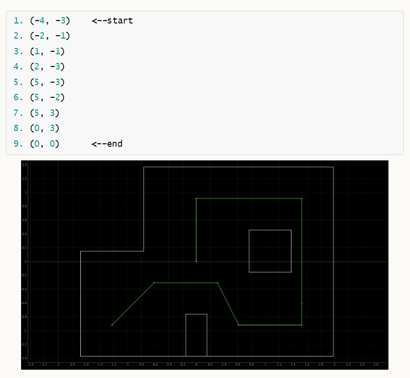

In this lab, I collaborated with WeiZhe Zhao to guide the robot to navigate swiftly and accurately through a predefined sequence of waypoints within the stipulated environment. The designated waypoints outlining the car's route on the map are enumerated below:
Given the constraints of time during the finals, I opted to configure my robot to adhere to a pre-set series of steps using PID Control for both location and orientation, as specified below. Insights from the previous lab revealed that the Time of Flight (TOF) sensor is not optimal for long distances. As a result, we resolved to guide the robot in a reverse direction from point 2 to point 4, and from point 10 to 11, thus facilitating more accurate readings from the TOF sensor. Additionally, making the robot move in reverse minimizes the likelihood of the TOF sensor mistakenly measuring the distance from the box instead of the wall.
we run the pre-defined step in the notebook by sending the corresponding command in order:
The command sent to the robot contains includes PID values and either the target distance or degree. These target distances are premeasured at each point, while the target degree corresponds to the degrees specified in the diagram provided earlier.
For the PID control for the orientation and postion , The code used is from previous lab and the code is shown below :
After implementing the code, we run the robot few times and found that the PID orientation was not stable and might turn more than expected and lead to the failure of subsequence point , we therefore modify some of the target degree. Finally , the robot run quite well: